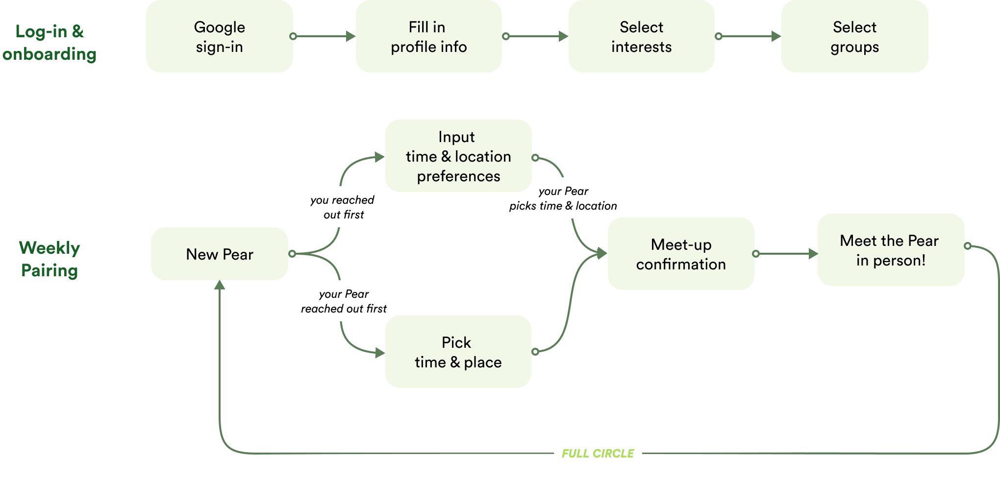
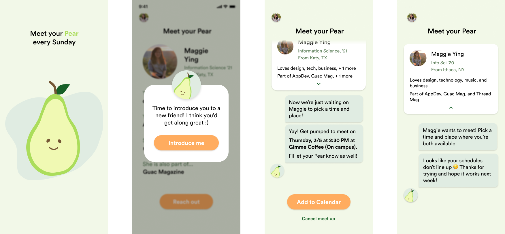

01
why did we build Pear?

what is pear
Through an initiative within Cornell AppDev to pair up members for coffee chats, many new faces can have 30 minute chats grow into two hour lunches and lifelong friendships. But much more often, we pass by other students, hesitating to say hi in between eye contacts.
When the idea of “coffee chats but for all of Cornell†was brought up, we saw an opportunity to break awkward barriers and improve campus culture by encouraging friendly, in-person meetups.
(disclaimer: the ideation of Pear happened prior to COVID-19)
the problem
Cornell students want to form meaningful connections with other students. But this is difficult because:
they do not know how to initiate the interaction
they are not used to branching out beyond their current circle
02
how should we build Pear?
Our user research further vaildated the opportunity space that we hypothesized, shedding light on the problem as well as how we might approach it. In total, we collected 75 survey responses and conducted 6 in-person interviews. Here is what we learned:
user research key findings
solving the problem in 2 parts
Based on our user research insights, we established 2 primary product requirements as our main approach to tackle the problem.
1. Connect people with common interests and groups.
Pear should offer a platform to students who don’t know where to meet people with common interests. It will also help campus groups grow closer as a community.
2. Minimize the friction when reaching out and scheduling chats.
Reaching out to people is hard. The key features of Pear should help students overcome the awkwardness when contacting people they don’t know well, waiting for a response, and finding a time in students’ busy schedule.
03
what does Pear do?

user-flow diagram
​​​​​​​personalized matching based on interests and groups
With common ground, people are more likely to follow through with pairings and have a positive experience during the meet-up.
In the onboarding flow, users have the opportunity to input their background information as well as select their personal interests and organizations.
​​​​​​​automatic pairings, one at a time
Pear makes a personalized, one-on-one introduction every week and invites people to get to know one other.
Every Sunday, the user will be paired with another Cornell undergrad on the app based on commonalities between their profiles.
​​​​​​​reach out by proposing time and location
No more awkward messaging to confirm the meet-up. Pear’s simple scheduling flow lets people focus on relationship building.
When reaching out first, users will input their weekly availabilities once before they receive their first Pear, saving redundant actions in the long run.
When they schedule weekly meet-ups, they can confirm or revise the pre-filled availabilities.
​​​​​​​respond to meet-up invite
When user's weekly pear reached out first, they can simply pick from the time and locations proposed by the other person, and the meet-up will be confirmed right away. This saves both parties from the dread of messaging back and forth to finalize the meet-up details.
*For more high-fidelity screens and detailed design process, stay tuned for the upcoming Pear Handbook!
04
who is Pear?
​​​​​​​working around engineering constraint: no in-app DMs
With the initial goal of shipping Pear within one semester, it appeared unfeasible to build in instant messaging in Pear and therefore generated a major engineering constraint that we have to work with. We still need another way to give each user updates and reminders about the pairings.
The engineering constraint inspired the birth of our most precious brainchild, Pear — a bot with first-person perspective and interface that mimic chatting could also make the pairings feel more personal.​​​​​​​
Pear is a play on the word “pair”, alluding to how the app matches people in pairs based on commonalities. The name also opens up an exciting opportunity space for creative character design and brand identity centered around the fruit.
​​​​​​​the Pear persona: your friendly bot for updates and notifications
examples of where Pear comes into play
At the core of Pear’s personality is friendliness. With a warm, inviting and human image, Pear assures users that they are connected to real people who also hope to meet, despite being unable to have conversations within the app. This is something that we always kept in mind when characterizing the visual, emotions, and tone of the Pear bot.
Additionally, there is already an association of coffee chats with a "snakey†and professional-focused culture at Cornell. Through the voice of Pear, We want to create a comfortable space where people genuinely want to know each other beyond career goals, clubs, and achievements.
​​​​​​​instilling "friendliness" into our brand
Through the Circular Standard font, organic-looking icons, and soft colors, we also carefully crafted our visual design to convey friendliness to our users.

branding guidelines
05
where is Pear going next?
Unfortunately, COVID-19 is changing people’s attitudes towards in-person meetings with strangers 😢. As the pandemic unfolds, the team will keep this in mind in shaping our product. However, we are optimistic that there will always be a need to feel connected with the community, whether that will be over video calls, or some other solution. ​​​​​​​
Here are some goals for the future:
System notifications: This will be an important part of notifying students of the pairing cycle and scheduled meetings.
Instant messaging: Though this is a backend challenge that we held off on for the MVP, it’s an important step in building a trustworthy social platform.
Community feed: It can feel intimidating not knowing if other people are also joining in on this completely new platform. We are planning to create a feed that shows who has met up with each other to remind Cornell that meeting new people is fun, and you should too!
06
what did i learn from Pear?
Communicate, communicate, communicate. When working on a tight timeline, things can change very fast on the design side. Taking some additional time for syncing in with the team early on can save much time solving misunderstanding afterwards.
Constraints can grow into opportunities. To my surprise, the engineering constraint in fact helped us squeeze the most out of our creative juice. The Pear bot not only takes an effective stab at the problem, but it also became our unique brand identity, adding some personal colors to our product.
Don't be afraid to show rough work. As designers, we all take pride in our work and hope to always present the most polished artifacts. However, the early stage of product development requires rapid iterations, and sometimes we are showing "rough" or "bad" work at critique due to the tight time constraint. Despite the imperfect visuals, the "rough" work can still bring us many valuable feedbacks about interaction design, user flow, etc. I have grown much more comfortable showing my work to designers and developers.
*This case study is written in collaboration with my co-designer and friend Cindy Huang. Currently, we are working on a process handbook that documents the detailed journey of how Pear came to be. More to come very soon!